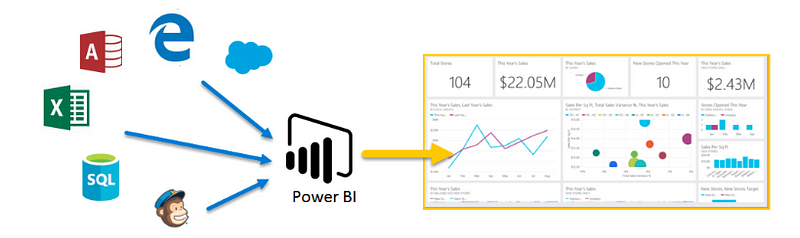
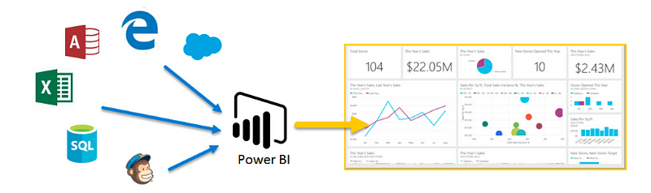
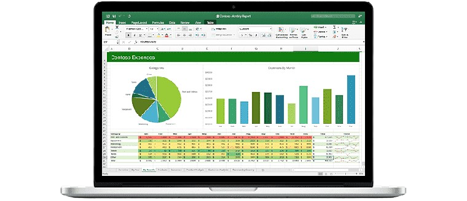

October 2024
Streamlined the repair logging process for a Housing Association by designing and implementing a Salesforce-based solution. Delivered an automated system with real-time tracking, enhanced communication, and actionable insights, improving efficiency and tenant satisfaction.
 

Transformed unstructured data into meaningful insights using SQL for data preparation and Power BI for visualisation. Delivered an interactive dashboard enabling in-depth analysis and data-driven decision-making.

Transformed raw data into actionable insights through meticulous data cleansing and formatting. Delivered a dynamic, interactive dashboard to effectively visualise key metrics and trends.

Formulated an operational and change management strategy for the client based on the data given to meet their Net Zero targets and align them with UN's Sustainable Development Goals.

Formulated a strategic outreach and marketing campaign for a National Trust property in Bath, UK.